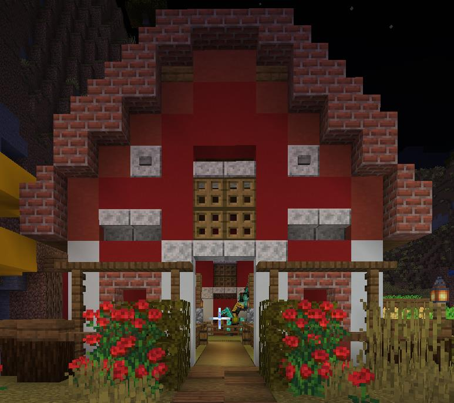
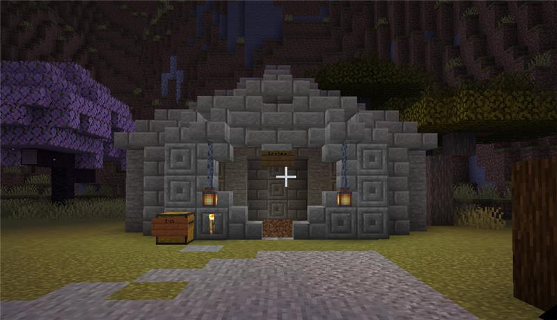

Unser Haus ist das Herzstück unseres gesamten Projekts! Hier leben wir und
lagern unsere wichtigsten Ressourcen. Mit einer gemütlichen Einrichtung
und liebevollen Details ist es nicht nur ein sicherer Rückzugsort, sondern
auch ein Ort, an dem wir nach langen Abenteuern entspannen können. Große
Fenster und ein sicheres Dach schützen uns vor Monsterangriffen und sorgen
für eine angenehme Atmosphäre.
Unser Scheune

Die Scheune dient als Lagerzentrum für unsere landwirtschaftlichen
Ressourcen und Tiere. Hier bewahren wir Heu, Samen und andere Erträge auf.
Sie ist groß genug, um auch Kühe, Schafe und andere Nutztiere
unterzubringen. Mit ihrer rustikalen Holzoptik fügt sie sich ideal in die
Landschaft ein und ist der perfekte Ort, um unsere landwirtschaftlichen
Bestände zu organisieren.
Unsere Love Cave

Die Love Cave ist unsere besondere Mine, die wir so gestaltet haben, dass
sie nicht nur praktisch, sondern auch einladend wirkt. Hier gehen wir auf
Erzjagd und finden wertvolle Ressourcen wie Eisen, Gold und Diamanten. Mit
beleuchteten Wegen und einem gut organisierten Abbausystem ist sie ein
effizienter und sicherer Ort, um tief unter die Erde vorzudringen und
unsere Vorräte aufzustocken.